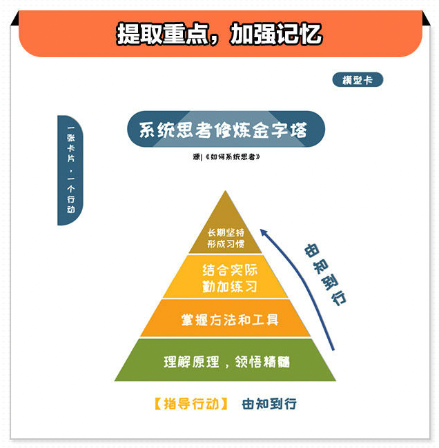
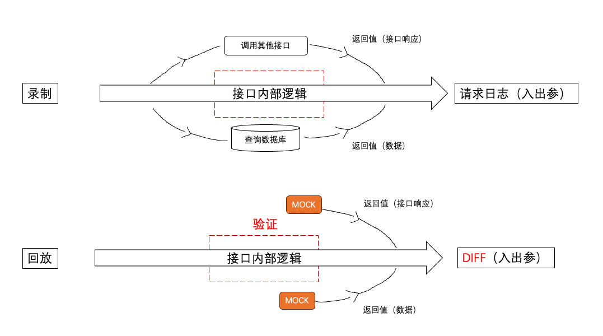
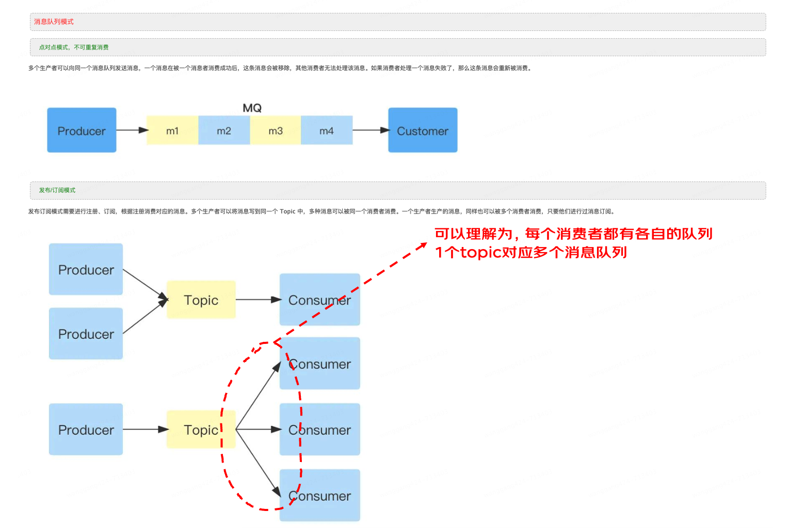
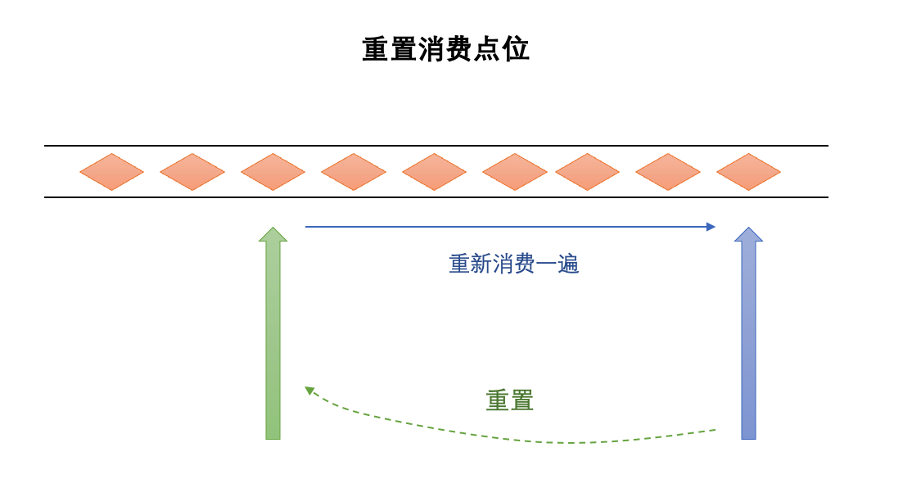
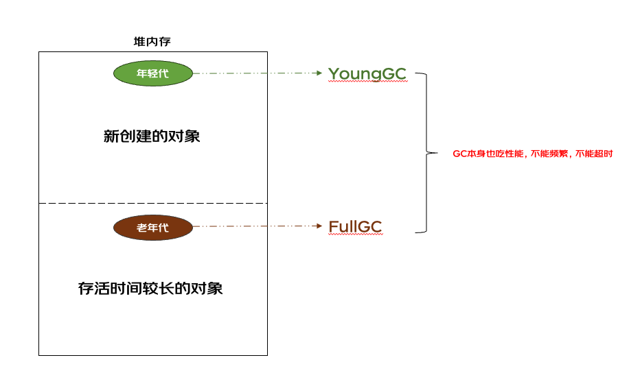
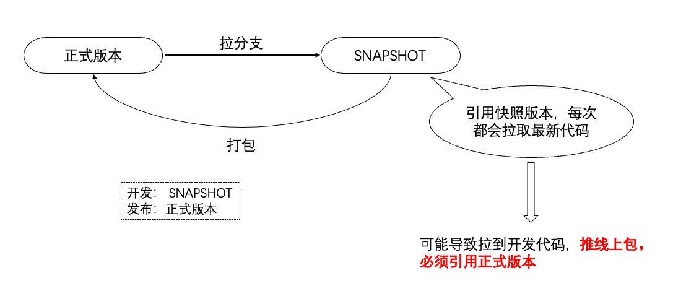
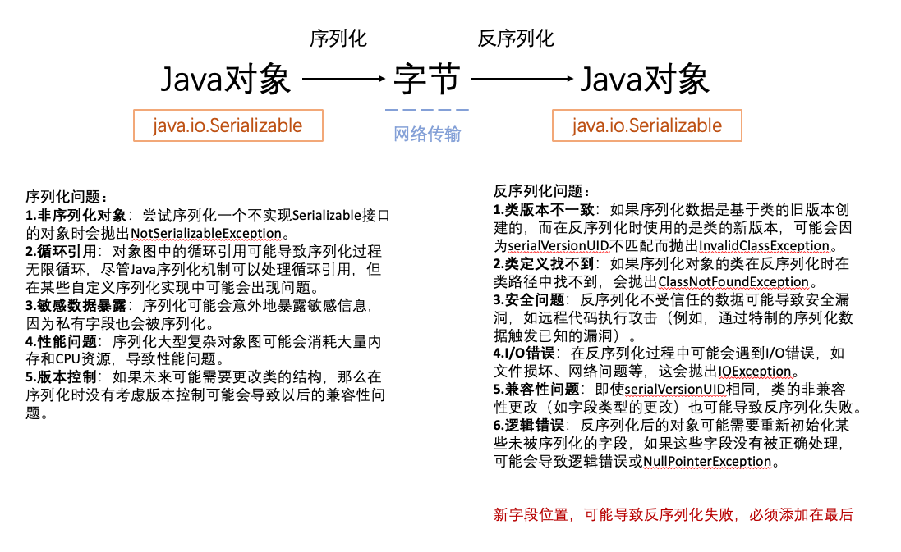

一、引言
技术学习有个特点，看完就忘，再看再忘，还看还忘。艾宾浩斯遗忘曲线，解释了这一现象，学习后的 20 分钟内，记忆的遗忘速度最快。1 个小时后，遗忘速度开始减慢。1 天后，遗忘速度显著降低。一段时间后，记忆会变得相对稳定。
为了能够记忆技术知识点，我们可以尝试理解技术逻辑，定时复习，主动回忆。通常的做法是将原文摘抄下来，回顾时再读一遍。缺点在于，技术逻辑与文学不同，每次都要烧脑，无法唤醒记忆。
二、什么是知识卡片
知识卡片是我在《高效学习法》学到的笔记技巧。简单来说，知识卡片就是把知识“画”在一张卡片上，重点是“画”。

（图片来源于《高效学习法》）
三、为什么需要知识卡片
知识呈现形式，影响着阅读理解难度，图形>表格>文字。技术逻辑是一个思考过程，想通了以后，在我们脑海中会浮现出一副图像，可能是流程图、数据流、树状图等。如果每次复习都能看到这幅图像，那么复习效率将会显著提升。很有必要，将这幅图像刻画出来。
四、怎么制作知识卡片
我们可以找个本子，用笔进行绘画，但是相对于纸质笔记，我更推荐使用电子笔记，便于存储，多设备阅读和分享。
知识卡片，可以使用常见的办公软件来制作，PowerPoint，俗称 PPT。
先做好知识卡片分类，将同一类知识卡片放在同一个文件里面，创建多张幻灯片。
画图时随意发挥，只要能把技术逻辑描绘出来，自己能看懂，方便理解即可。
五、我的知识卡片分享
①流量录制回放

②消息队列


③ Java



六、总结
知识卡片，是一种视觉化的笔记方法，便于理解和记忆。学而不思则罔，思而不学则殆。知识卡片特别适合技术学习，温故而知新。感兴趣的小伙伴，动手画起来吧。